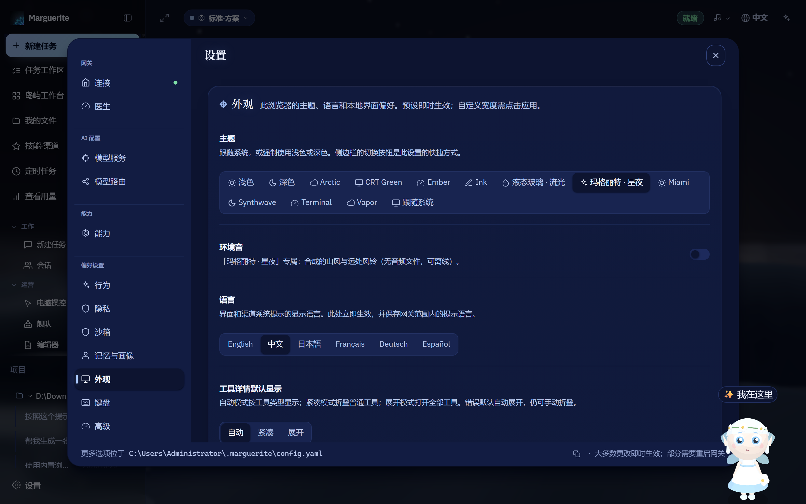
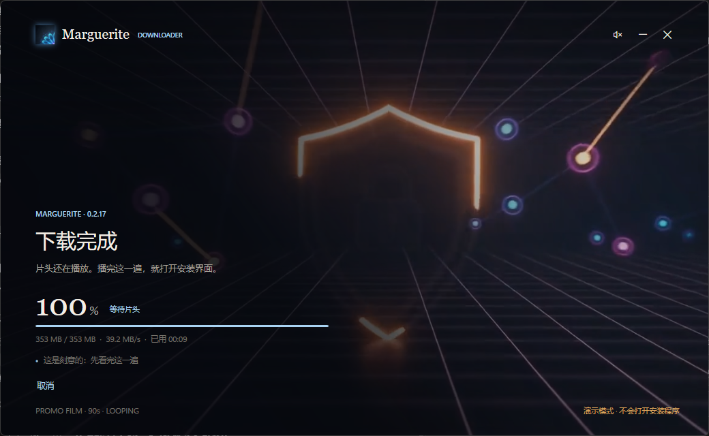
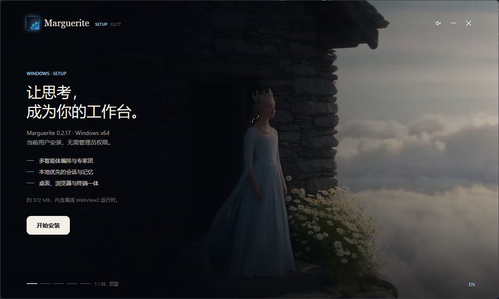
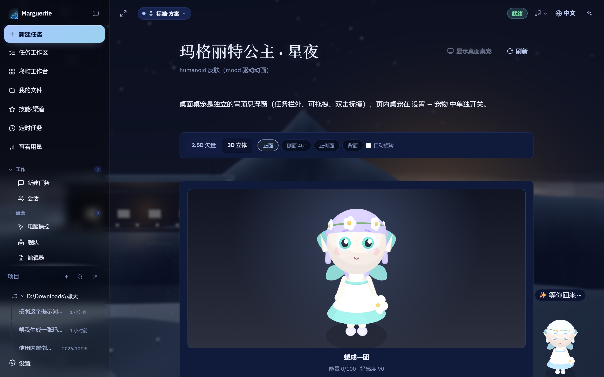

一个核心，两种外壳
Rust 内核同时产出库与二进制，CLI 与 Tauri 桌面共用同一引擎——桌面端不另起后端进程。
0.2.17安装包内含离线 WebView2，断网也能装。看下载与校验 →
本地优先 · 桌面 AI Agent 工作台 · 0.2.17
Agent 运行时、分层记忆与幻觉护栏写进同一个 Rust 核心，编译成一个本地优先的可执行文件。 内嵌网关只监听回环地址。往下是 85 秒——跟着鼓点走的那种。
提交后直接带进下面的真实输入框跑一遍。演示在浏览器内运行，不联网、不发送内容。
THE FILM · 85 SECONDS
背景音乐是工作台内置的 focus-pulse.mp3。拍点由脚本分析音频得出（56 BPM，相位 0.778s），
每一幕的切换都对齐到真实拍点，而不是“大概每 12 秒换一张”。
MARGUERITE · 0.2.17
本地优先的桌面 Agent 工作台
REAL WORK,
NOT A CHAT BUBBLE
真实会话 · 工具回执 · 过程可见

MAKE IT
YOURS
主题 · 壁纸 · 桌宠 · 六种语言
01
LOCAL
FIRST
只监听 127.0.0.1:18790
02
SHOWS
ITS WORK
工具回执 · 完成门禁 · 台账可回放
03
ONE
BINARY
Rust 内核，桌面端不另起后端
NOT ANOTHER
CLOUD TAB
不是又一个云端标签页


INSTALL LIKE
A FILM
片头播完一整遍，才打开安装界面
已暂停 · 点画面继续
播放 85 秒 · 卡点版
音乐：focus-pulse.mp3（56 BPM）。画面为真实界面实录，交互按演示节奏重放。
浏览器拦了自动播放，点这里开始并开启声音。
你的系统开启了「减少动态效果」，短片已换成静帧序列。
REAL INTERFACE
聊天与设置都在「玛格丽特·星夜」主题、星夜壁纸、桌宠在位的前提下截取。滚动时镜头缓慢推近，细节留在原处。

OPERATION DEMO
下面这块是真的输入框：你可以自己打字，也可以点「示例」。发送后按真实节奏流式生成，并先落一条工具回执。
还没有消息。写一句，然后按发送。
想换一句？直接改上面的输入框，或按 示例。
WHY DIFFERENT
不比参数，只比「东西在哪里跑、过程能不能看见、结果能不能复核」。
对比仅描述产品形态差异，不含对任何第三方产品的评测或评分。Marguerite 一列的每条都对应仓库里可复跑的命令或可在界面中看到的面。
CAPABILITIES
不是功能清单，是写进代码、能在你自己机器上验证的事实。
Rust 内核同时产出库与二进制，CLI 与 Tauri 桌面共用同一引擎——桌面端不另起后端进程。
内嵌网关默认只监听 127.0.0.1:18790。局域网内其他机器扫不到，你的代码不为了「检索」离开这台机器。
感知、短期、长期三层记忆。长期记忆用本地特征哈希向量化做余弦检索，不依赖外部 embedding 服务。
语法、语义、事实、契约四道闸依次过闸。不过闸就进修复循环：规则修复最多两次，仍不过再交给模型。
EVIDENCE
提交前必须全绿的门禁，每一条都对应一句能在本机跑的命令。
cargo buildcargo testcargo clippy下载器内建FAQ
六条，答案都对得上仓库里的文件或命令；没有把握的我们不写。
安装不需要联网：安装包内含离线 WebView2，装完就能打开。运行时是否联网取决于你配置的模型——接本地模型可以完全离线，接云端提供方时才需要网络。
内嵌网关默认只绑定 127.0.0.1:18790，同一局域网里的其他机器也访问不到。本站页面本身不含第三方统计脚本——你在这一页上的所有操作都只发生在浏览器里。
下载器把「下载 → 校验 → 安装」串成一段能看懂的流程：片头完整播过一遍才打开安装界面，避免安装包没下完就启动安装。安装包约 372 MB。
目前提供的是 Windows x64 的桌面安装包。其他平台的进展以发布仓库里的实际产物为准，不做预告。
发布仓库会给出每个产物的 SHA256；下载器内建了同一个校验值，下载完成后可以直接对照。两者不一致就别装。
可以。内核是 Rust：cargo build --release -p marguerite-core；桌面壳在仓库的 gui/ 目录下，与内核共用同一个引擎。
Windows x64 · 约 372 MB · 内含离线 WebView2，断网也能装。
推荐路径
先完整播一遍片头，再打开安装界面。单文件 exe，内建 SHA256 校验。
MargueriteDownloader.exe · GitHub Releases
下载所有版本
历史安装包、SHA256 校验文件与更新记录都放在这里，按版本可查。
github.com/KLJyouth1/Marguerite-Releases
打开 Releases开发者
内核与桌面壳在同一个仓库，共用一套引擎。需要 Rust 工具链。
cargo build --release -p marguerite-core